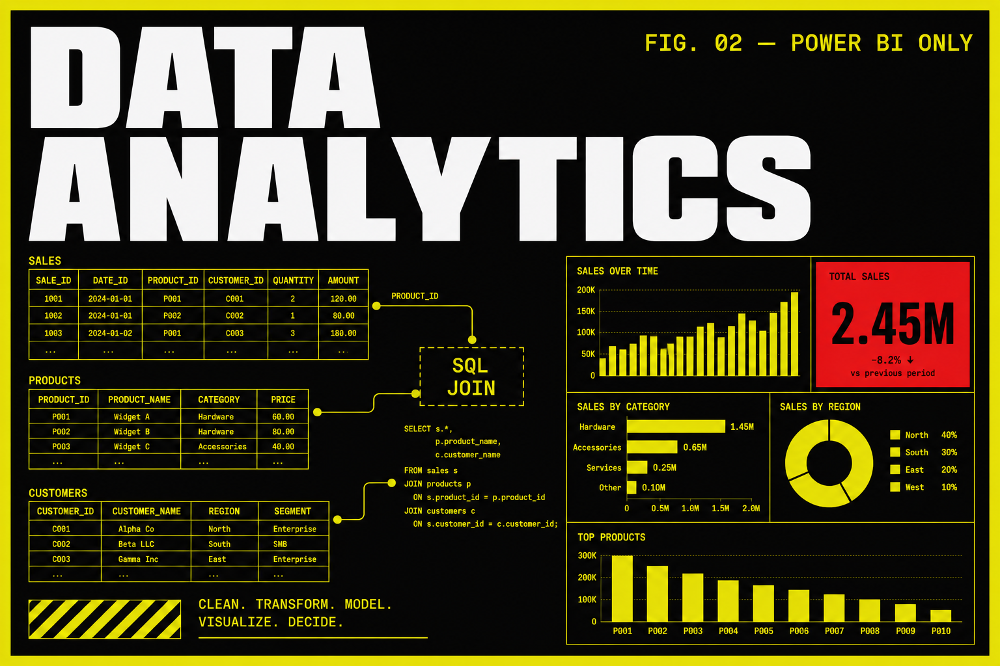

Data Analytics with AI
A 5-month live sequence for people who need to turn tables into decisions. Stack: Excel, SQL, Python for analysis, and Power BI as the dashboard tool. We do not teach Tableau on this program. Fee is published on this page. A career call tells you if this is the right next move.

Program fee
One-time payment
One-time fee inclusive of training, projects, certification and placement support.
Payment options
- Flexible batches: classroom or live virtual (same fee)
- EMI options available • Pay in 2 installments • No hidden charges
What you learn
Who it is for
Career support
Course Curriculum
Module 1: Excel for analysis
Spreadsheets and SQL
You start where most analyst jobs still start: a messy workbook, a stakeholder question, and a sheet that has to survive a review. Copilot is allowed as an accelerator once you can do the work by hand.
Workbook hygiene
- Named ranges, tables, and why a ‘pretty’ sheet still fails a join
- Absolute vs relative references, lookup families, and when INDEX/MATCH is enough
- Dates, types, and the errors that quietly break a pivot
Pivots and summaries
- Pivot tables for actual questions, not decoration
- Slicers, calculated fields, and a second view of the same fact table
- How to explain a number without hiding the filter that made it
Charts for stakeholders
- Choosing a chart that matches the claim
- Titles, axes, and annotations a manager can read in ten seconds
- What not to chart — vanity plots that do not change a decision
Copilot, used honestly
- Drafting formulas and cleaning steps with Copilot, then checking them
- Where NLQ helps and where it invents a column
- A short before/after: same analysis with and without the assistant
You leave with a cleaned workbook, a pivot that answers one real question, and a note on what Copilot got wrong.
Module 2: SQL for analysts
Spreadsheets and SQL
Hiring managers still ask you to pull a table. This module is selects, joins, and aggregations you can write on a whiteboard and in a notebook — not a DBA certification.
Reads you can defend
- SELECT, WHERE, ORDER BY, LIMIT — and why SELECT * is a smell in a review
- NULL behaviour, DISTINCT, and the row-count surprises that fail interviews
- Reading an EXPLAIN at a glance so you know if the query is lying
Joins and grain
- Inner, left, and anti-joins on real-ish schemas
- Grain: one row per customer vs one row per order
- How a bad join inflates revenue — you will break a number on purpose
Aggregations and windows
- GROUP BY that matches the question
- Window functions for running totals, ranks, and previous-period compares
- CTEs so a hiring manager can follow the story
Interview queries
- ‘Top N per group’, funnels, and retention-style cuts
- Writing the query, then saying the caveat in one sentence
- Saving a small case (question → SQL → result → so-what)
You leave with a short SQL case you can walk through on a career call — question, query, grain, caveat.
Module 3: Pandas and cleaning
Python for analysis
Spreadsheets stop being enough. You move the same tables into Pandas so you can clean, merge, and shape them without clicking yourself into a corner.
DataFrames as a habit
- Series vs DataFrame, dtypes, and why object columns hide dates
- Read CSV/Excel, then write a parquet or clean CSV you can hand off
- Indexing, loc/iloc, and the copy warnings you should not ignore
Missing values and types
- Drop vs fill vs flag — pick one and write why
- Numeric coercion, categoricals, and timezone-naive dates
- Outliers: keep, clip, or isolate before you plot
Merges and groupbys
- Merge on keys with validate='one_to_one' when the grain claims it
- Groupby aggregations that match SQL you already wrote
- Reshape: melt/pivot so a dashboard or model can eat the table
Feature-ready tables
- One table, one grain, documented columns
- A cleaning log in the notebook — not tribal memory
- A test: re-run the notebook on a second file without editing cells by hand
You leave with a cleaning notebook that produces one feature-ready table and a log of every drop/fill.
Module 4: EDA for business questions
Python for analysis
EDA here is not a gallery of plots. It is a sequence: question, cut, distribution, exception, sentence a stakeholder can use.
Distributions and outliers
- Histograms and box plots that name the unit
- When a ‘spike’ is a data bug vs a real event
- Segment first — all-up averages hide the story
Simple stats you can defend
- Mean vs median, rates vs counts
- A confidence interval you can explain without a lecture
- Correlation is not the campaign — you will say that out loud
Notebooks for humans
- A top cell that states the question and the grain
- Plots with titles that are claims, not ‘fig 3’
- A last cell: decision, caveat, next pull
Handoff
- Export a one-pager table plus two charts
- What belongs in Power BI next vs what stays in the notebook
- Review language for the career call: what you found, what you did not
You leave with an EDA notebook a stakeholder could skim — question, two charts, one caveat.
Module 5: Power BI dashboards
Power BI (the catalog’s only BI visualizer)
This is the only BI visualizer on the catalog. You model the data, write DAX that matches the grain, and publish a report someone can filter without calling you.
Data model
- Star-ish relationships, cardinality, and both-direction traps
- Date tables and why auto date/time will bite you
- Hiding columns the report should never expose
DAX measures
- CALCULATE, FILTER, and time intelligence you can explain
- Measures vs calculated columns — pick the cheaper one
- A broken measure on purpose, then the fix
Interactive reports
- Slicers, drill-through, and bookmarks without circus UI
- Row-level thinking: who should see which cut
- Mobile vs desktop — what you actually ship
Review bar
- Does the title state the decision?
- Can a new viewer find the filter that changed the number?
- Performance: too many visuals is a bug
You leave with a published-style report: model, three measures, filters that do not lie.
Module 6: AI-assisted BI
Power BI (the catalog’s only BI visualizer)
Copilot and NLQ on Power BI are part of the job now. You will use them, then check them, then ship a dashboard you can defend without the assistant in the room.
NLQ and Copilot
- Ask a question the model can actually see in the model
- When Copilot invents a measure — catch it with DAX you already know
- Prompt the assistant for layout, not for truth
Publish and share
- Workspaces, apps, and who gets which role
- Scheduled refresh and the email that fires when it fails
- A one-page ‘how to read this’ for the stakeholder
Portfolio dashboard
- One business question, one model, one report
- A short write-up: grain, measures, known gaps
- Career-call walkthrough: three clicks, one caveat
What this module is not
- Not Tableau — that is not on this program
- Not a placement percentage
- Not a substitute for SQL and Excel you already did
You leave with a portfolio dashboard plus a paragraph on what Copilot got wrong and how you fixed it.
Frequently asked questions
Is Power BI the only dashboard tool?
Yes. This is the catalog’s only BI visualizer track. We teach Power BI (and Excel charts). We do not teach Tableau here.
What is the fee and duration?
₹40,000, one-time, for a 5-month live cohort. EMI is discussed on the career call if you need it.
Do you offer placement, a certificate, and internships?
Yes. Placement support, a course certificate, and internship opportunities are part of the program. Resume and interview practice when you are actually applying.
Ready to start?
Talk to Prerna about this program — 15 minutes, no sales pitch.